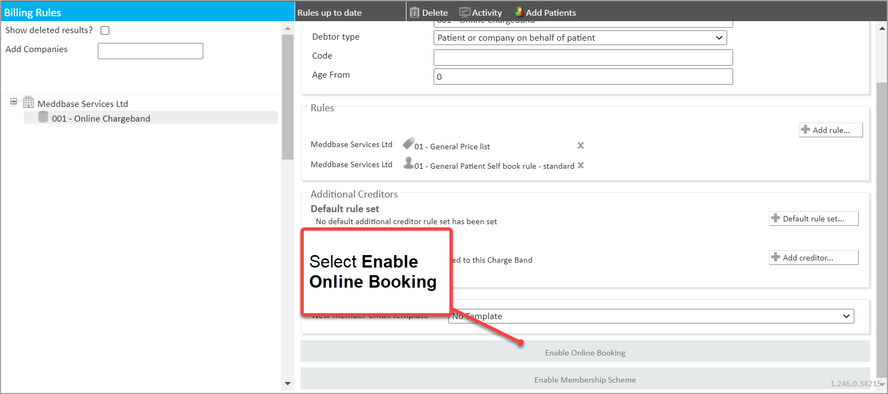
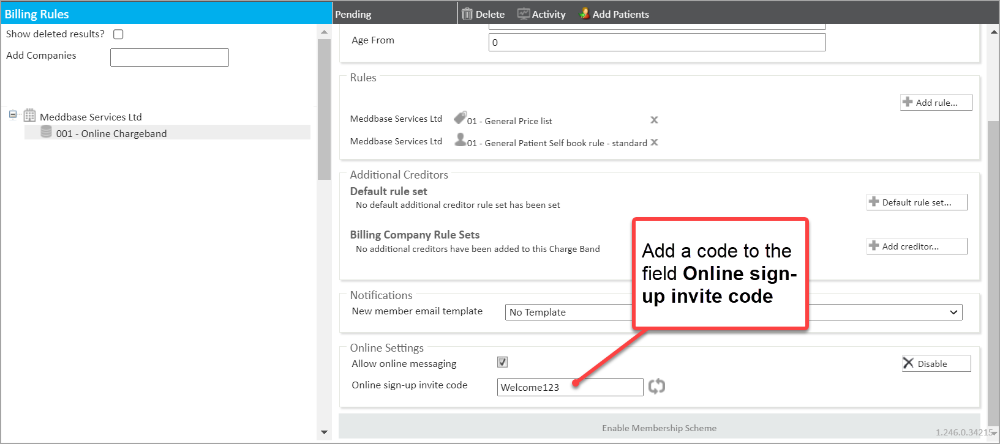
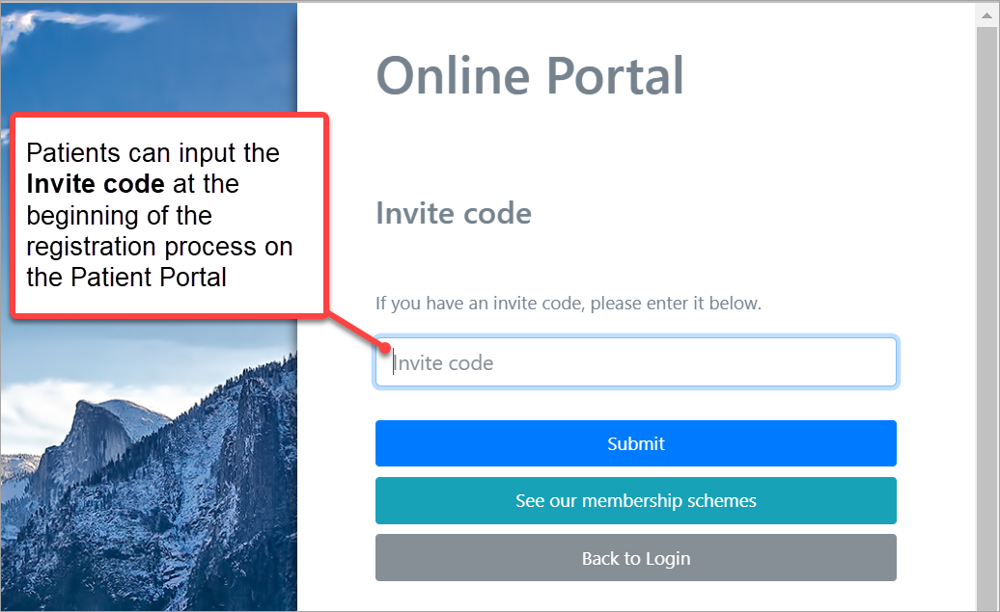

This article outlines:
Step One and Step Two outlined below are explained in detail in the article Creating an online Charge Band.
There are several steps to this process. They are described below.
To create a new Charge Band to allow new patients to register on the Patient Portal:

The Online Settings panel is now made available.
In the Online Settings panel, populate the Online sign-up invite code with a code you would like new patients to use - for example, Welcome123

When the Allow Online Messaging check-box is ticked in the Online Settings, the patient can contact your company through the Patient Portal via direct messages. You can find out more about this feature in the article Online Messaging.
Repeat the above steps for every Charge Band for which you wish patients to be able to sign up online via your Patient Portal

Once the new patient completes the patient registration process these new patients will be visible in your Meddbase chamber on their assigned Charge Band, as per the invite code they submitted.
The configuration above does NOT automatically enable all appointments and services types associated with this Charge Band to be bookable online. To do you please read more about the Patient Self Book Rule and ensure the online booking is enabled in Appointment Types.